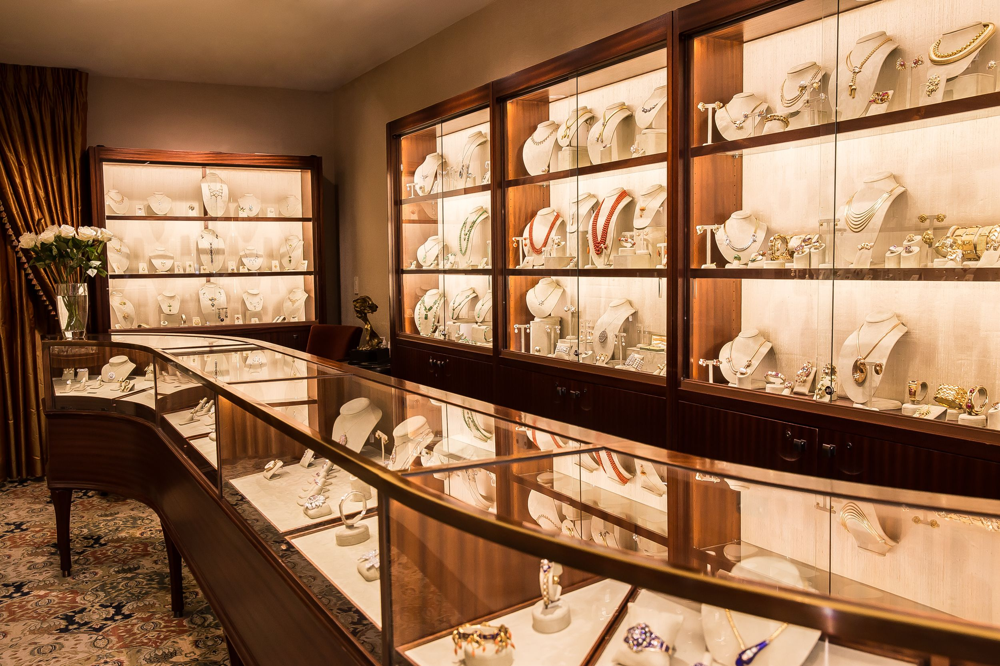

Te contamos nuestra historia
Nos posicionamos como una de las joyerías más prestigiosas de toda Latinoamérica
Joyería Zafiro tiene una trayectoria y experiencia de más de 6 años, brindando confianza, servicio y excelente atención en Palermo
Abrió sus puertas por primera vez en Av.Juan Bautista Justo al 0, marcando el inicio de su legado en el mundo de la joyería.
Se ha constituido a lo largo del tiempo en un destino de sumo interes para aquellos visitantes nacionales y extranjeros en busca de productos de calidad y accesible a todo presupuesto.
Si estás en Buenos Aires, no dejes de visitar Joyeria Zafiro, tu punto de encuentro con las marcas más reconocidas de joyería internacional.
Les dejamos la historia del mineral elegido para el nombre de la Joyeria Zafiro, haga clic aqui para entrar a conocer la historia de zafiro